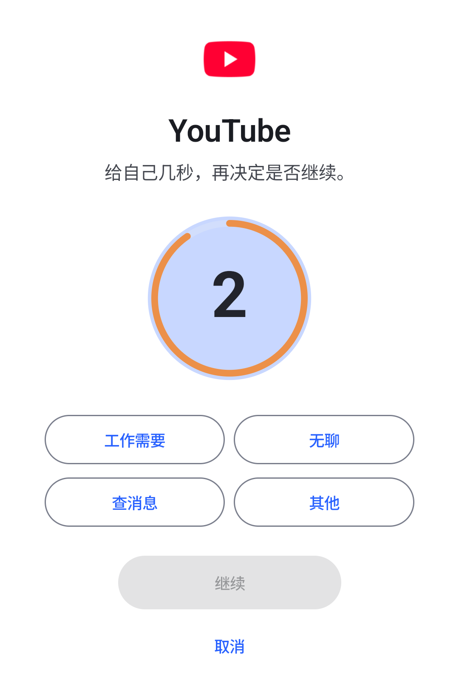

Appause · Android 专注工具
先等十秒，
再打开。
你挑几个最分心的应用，打开前先冷却几秒。要不要继续，你自己按。
- MIT 开源
- 永久免费，没有内购
- 数据只存本机
- 无账号

开始用
装它只有三步，第三步最容易被忘
Appause 不在应用商店里，需要你自己装。权限只申请用得上的那几项。
-
下载并允许安装
点上面的下载按钮。系统会提示「禁止安装未知应用」，按提示给浏览器或文件管理器放行一次。
-
打开 Appause，开启无障碍服务
首页会列出还差哪几项，点「去开启」跟着走。这项权限只用来知道你打开了哪个应用。
-
把电池优化关掉
在电池设置里把 Appause 设为「无限制」，并允许自启动。不然系统会在后台把它杀掉，拦截就会时灵时不灵。
装新版直接覆盖就好，不要先卸载。卸载会把本机的分组和统计一起清掉。
它是怎么拦的
一次拦截，就三件事
没有云端判断，也没有算法猜你想干什么。规则是你自己写的，它就照着执行。
你点开，它先把你留住
无障碍服务只读到一件事：你点开的是哪个应用。拿到的是一个包名字符串，没有别的。
窗口内容读取是关掉的（canRetrieveWindowContent = false）
这几秒由你定，顺便留个理由
新分组默认冷却 10 秒，可以在 1 到 60 秒之间改。等的时候先选一个原因：工作需要、无聊、查消息，或者其他。
冷却上限 60 秒，免费版和 Pro 一样

继续，或者回桌面
「继续」进应用；「取消」直接回桌面，冷却重新算。每次的选择都记在统计里，哪天想看看自己什么时候最容易手滑，翻一下就知道。
真机记录：回到桌面后 291 毫秒内重开，会再被拦一次

权限
它要哪些权限，各自干什么
只有无障碍服务是必须的，其余按需要开。每一项都可以随时在系统设置里关掉。
日常使用不联网。只在开启试用、兑换永久授权码或发送反馈时才会连一次服务器。 分组、冷却设置和统计只写在这台手机上，卸载就清空。 完整说明见 PRIVACY.md。
价钱
不收费，也没有付费版
拦截、冷却、暂停页、统计对所有人开放，没有时间限制。Pro 只是另外四项还在改的功能。
所有人都能用
- 拦截与冷却：想拦几个应用都行，冷却最长 60 秒
- 暂停页与原因：四个固定选项，继续或取消都记下来
- 使用统计：365 天，每次继续或取消的原因都在
- 打开理由与诊断：反馈时带一份快照，发不发由你
Pro · 四项还在改的功能
- 无限分组：免费版可以建 1 个
- 再次提醒：停在目标应用里时再提醒一次
- 自定义暂停提示语：换成你自己写的句子
- 自定义打开原因：改成你真的会去点的选项
Pro 也一样不花钱：每台设备可以主动开一次 7 天试用，到期后这四项会关掉，已有的分组和统计不受影响。
想接着用，到 设置 → 反馈 申请一个 免费的永久授权码，回 Pro 页面兑换就行。
码由开发者人工签发，绑定设备，一个码最多用在 3 台上。
还有疑问
常见问题
这种要开无障碍权限的应用，安全吗？
它拿到的就是一个包名字符串，窗口内容读取是关掉的（canRetrieveWindowContent = false）。 不需要用的时候，随时可以在系统设置里关掉这项权限，Appause 只是拦不住而已，不会出别的问题。 代码是 MIT 开源的，你可以自己看它到底做了什么。
会不会很耗电，或者拦不住？
无障碍服务会一直挂在后台，本机测试里耗电影响不大。如果发现拦截时灵时不灵，先检查两件事： 把 Appause 的电池优化设为「无限制」，并允许自启动。小米 HyperOS 这类系统杀掉后台服务后， 不会自动把无障碍服务重新拉起来，这是排障记录里最常见的原因。
暂停页会被别的应用挡住吗？
它用的是一种更高层级的窗口类型，盖在普通应用上面，实测在开了「隐藏悬浮窗」的应用上依然可见。 个别机型如果还是不显示，可以打开悬浮窗权限，Appause 会换一套备用方式。
永久授权码要花钱吗？怎么拿？
不用。到 设置 → 反馈 申请就行，开发者人工签发，全程免费，没有内购，也没有自动开通的入口。
顺序上有一点注意：这台设备如果已经开过 7 天试用，要等试用走完才能兑换；没开过试用的新设备可以直接申请。
换手机之后数据还在吗？
数据只存在这台手机上，卸载就会全部清掉。分组和统计没有云同步，换机后要重新设置。
下载 Appause v0.5.45
公开测试版 2026-09-24 发布 · 未上架应用商店 · MIT 开源
Appause-v0.5.45.apk- 包名 com.appause.android
- versionCode 97
- 大小 12.3 MB
- 系统要求 Android 8.0+
查看 APK SHA-256 校验值
07cfbfaace902ea718f46abc1bcfd2011f42087e73ed3c60a34a62921bf30b6a